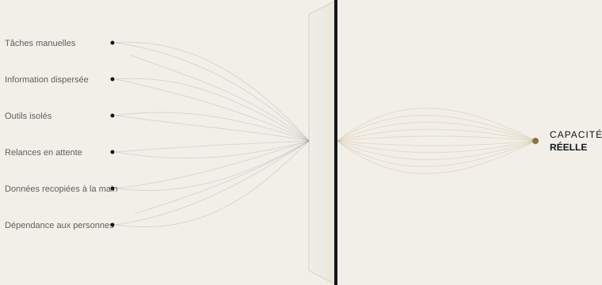

Automatisation
Nous transformons les tâches répétitives en processus automatiques, selon des règles définies avec vous.
AUTOMATISATION DES RESSOURCES
La plupart des entreprises n'ont pas besoin de plus d'outils. Elles ont besoin de savoir où leur échappent le temps, l'information et l'attention.
SKURX SYSTEMS repère où se perd la capacité et la transforme en méthodes de travail plus claires, plus connectées et plus efficaces.
CE QUE NOUS FAISONS
Nous repérons où votre entreprise perd de la capacité et nous la libérons grâce à l'automatisation, à des outils connectés et à l'intelligence artificielle appliquée, là où elle a du sens.

NOS SERVICES
Nous transformons les tâches répétitives en processus automatiques, selon des règles définies avec vous.
Pour ce qu'une règle ne résout pas : l'IA renforce votre équipe, elle ne la remplace pas.
Nous connectons vos outils pour que l'information passe de l'un à l'autre sans que personne n'ait à intervenir.
NOTRE MÉTHODE
Nous ne partons pas d'une technologie, mais d'une question : où votre entreprise perd-elle de la capacité, et pourquoi ?
Nous découvrons votre entreprise de l'intérieur, en observant comment votre équipe travaille au quotidien.
Nous identifions où se perdent du temps, des informations ou des clients potentiels, et pourquoi.
Nous vous disons ce que nous changerions et ce qui ne vaut pas la peine d'être touché.
Nous le mettons en service, le testons avec vous et l'ajustons jusqu'à ce qu'il fonctionne comme votre équipe en a besoin.
LA PREMIÈRE ÉTAPE
En une semaine, nous analysons le fonctionnement de votre entreprise et nous vous remettons une carte claire : ce qui consomme de la capacité, ce qui peut être automatisé et dans quel ordre. Le rapport vous appartient, quelle que soit votre décision.
Chaque flux expliqué en langage clair.
Comptes, outils et données vous appartiennent.
Vous pouvez voir ce que chaque automatisation a fait, et quand.
Si nous cessons de travailler ensemble, tout reste à vous.
EXEMPLES PAR SECTEUR
Scénarios illustratifs fondés sur des situations courantes. Nous travaillons avec des entreprises de tous secteurs, dans toute l'Espagne.
Tout continue de tourner, même quand il ne reste plus personne au bureau.